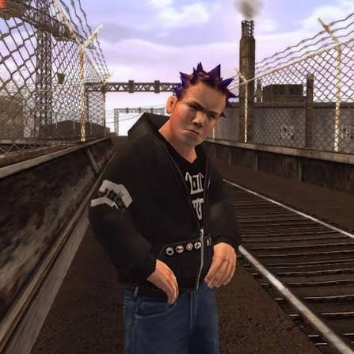

Moverte
Con W A S D caminás por el local en primera persona y mirás alrededor con el mouse.
Experiencia interactiva · Unreal Engine 5
Armonoia nace de la tensión entre armonía y paranoia. Es una experiencia interactiva, hecha en Unreal Engine 5 donde vivís cómo el tiempo que le dedicamos a lo que debemos hacer nos aleja de lo que nos apasiona hacer.
Está pensada para quienes, entre lo que quieren y lo que desean, terminan dejando de lado eso que los apasiona. Lo que buscamos generar es una pregunta: ¿existe algo entre lo que quiero y lo que deseo?

Lukas es un apasionado del skate. Su trabajo le encanta, pero muchas veces lo que tiene que hacer le aburre y desea hacer otras cosas que no puede en ese momento. Sus deseos y sentimientos pueden distorsionar su realidad.
Antes de entrar, esto es lo que tenés que saber:
Con W A S D caminás por el local en primera persona y mirás alrededor con el mouse.
Con la E interactuas con todo. Limpiás la vidriera, barrés, prendés la tele, abrís puertas y movés skates y cajas.
En pantalla vas a ver códigos QR y links. Abren webs externas al juego (el WhatsApp de Lukas, la compra de entradas) para seguir la experiencia.
Durante la experiencia te van a escribir por whatsapp (por ejemplo, tu jefe). Respondés eligiendo una opción, y cada opción muestra lo que Lukas piensa de verdad.
Pero ojo: lo que se envía no siempre es lo mismo que pensaste. Probalo acá ->
Lukas escucha nu metal todo el día. Elegí un tema de su playlist personal y escuchala mientras lees la web. También vas a poder escuchar estos temas en el unreal, obvio.
Cuatro momentos del día. Tocá el reloj y el tiempo avanza.
↑ tocá el reloj
Lukas llega temprano al local, con las luces apagadas, y descubre que su compañero Pedro faltó otra vez: hoy atiende solo. Ya en primera persona, recorrés el local hasta que suena una notificación de WhatsApp en la compu del mostrador. Un QR te lleva al chat real con su jefe, que le pide limpiar la vidriera y abrir el local.
Al lado del balde hay una lata de aerosol, pero al intentar graffitear solo puede escribir carteles aburridos, como “Aceptamos todas las tarjetas” o “10% OFF en efectivo”. Termina de "limpiar" y vuelve a entrar al local.
Hoy va a ser un día largo.


Mientras ordena las rueditas de skate en las cajas debajo del mostrador, a Lukas le suena la panza y piensa en la heladera del taller. Al abrirla, una luz lo ciega y lo transporta a un mundo ideal lleno de sus comidas favoritas, con carteles que lo invitan y tientan.
Pero cuando se acerca, la comida se aleja y suena un error: no puede tocar nada. Al fondo del recorrido hay otra heladera. Al abrirla, un pestañeo lo devuelve al local, justo donde estaba, con la tarea todavía por terminar.
Qué hambre que tengo, ojalá hubiese sido real.


Mientras barre el taller, Lukas prende la tele y pasan un recital de Limp Bizkit, su banda favorita. En pantalla aparece un QR para comprar entradas: entra a la web, pero salta un cartel que dice que no quedan más.
Un amigo le escribe por WhatsApp para preguntarle si va. Lukas quiere decirle que sí, pero sus mensajes no reflejan lo que siente. Con bronca, va al baño a mojarse la cara y, al abrir la puerta, aparece en pleno recital: lejos del escenario, entre el pogo. Se abre paso hasta el frente, alguien lo empuja y queda aturdido. Cierra los ojos y vuelve a estar frente al espejo del baño.
Uy, re flashee me parece. Sigo en el laburo.


Es el final del día su jefe le escribe que no se olvide del cierre de caja. Mientras cuenta las ganancias (con sonido de casino, "chachinggg" para darle un toque), el audio se va llenando de reverb hasta que se queda dormido.
Despierta en un espacio donde están todos sus deseos juntos, y ahí se encuentra con su reflejo: él mismo, pero más feliz. Para despertar tiene que encontrar lo que más ama, en sus recuerdos. Entre fotos amontonadas de sus responsabilidades, las va corriendo hasta llegar a la última: Lukas de chiquito con su primer skate. Su reflejo lo felicita y lo hace pensar dónde dejó sus pasiones.
¿Hace cuánto no hago algo solo porque me pinta?
Armonoia solo quería hacerte vivir que a veces lo que uno quiere hacer relega las pasiones. Ninguna está mal, lo bueno es poder combinarlas.